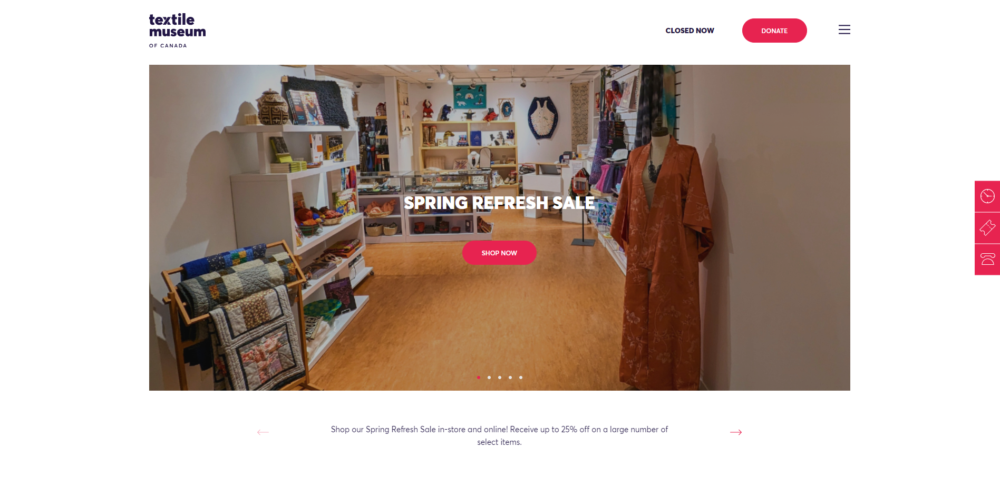
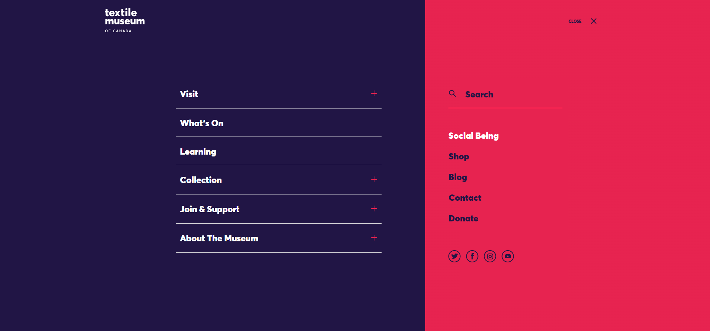
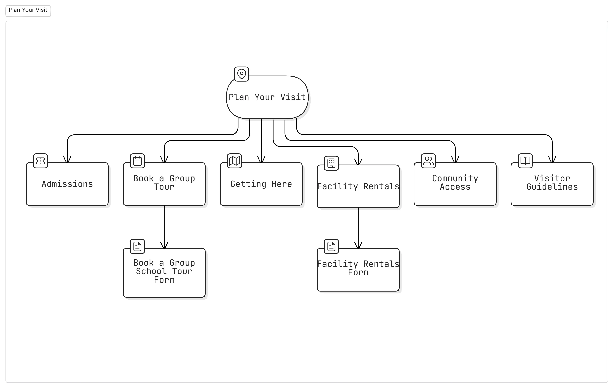
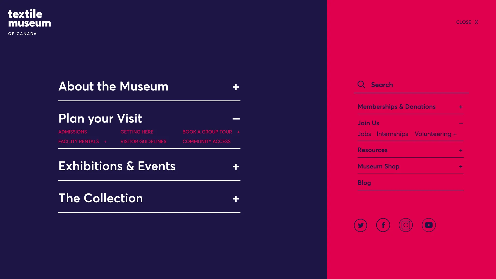

Content Inventory & Audit
To evaluate the current state of the website's content, we conducted a detailed audit of 32 pages, with each page assessed based on four key criteria: Audience, User Expectation, Recency & Relevancy, and Call to Actions. This allowed us to identify areas for improvement in how the content was organized and presented.
I personally audited 8 pages, focusing on assessing the relevance, clarity, and completeness of the content. During the audit, we observed that while most pages provided valuable information, there were issues with inconsistent labeling, outdated content, and unclear calls to action. Specific findings included:
Lack of Recency Indicators
Many pages, particularly those related to health and safety protocols, had not been updated since the museum's reopening, which created confusion about the relevance of the information.
Inconsistent Titles
Page titles did not always match the content, leading to mismatches between user expectations and actual content.
Incomplete Content
Some pages lacked clear information about volunteer opportunities, job openings, and museum programs, making it difficult for users to find what they were looking for.
Missing Calls to Action
Pages like the "Visit" page were informative but lacked prominent calls to action, such as booking tickets or exploring membership options.
Challenges with Current Menu
The current menu is hidden away inside a hamburger menu, it isn't less-complex nor it is accessible.
The menu covers the entire page and there is no indication as to what page the user is in nor does it have a way for the user to go home.
The menu also uses the + symbol to reveal the sub menu, which is not intuitive and might lead to mis-clicks as the menu items themselves are pages, not dropdown folders.


Information Architecture
Our proposed IA was shaped by content audit findings and card sort insights. The new structure improves clarity, reduces redundancy, and enhances navigation.
The final solution now reflects the following changes:
- Consolidated and streamlined navigation categories based on card sort patterns
- Reorganized content to reduce duplication and improve clarity
- Introduced clearer labels for pages to enhance user understanding
- Refined menu structure to support intuitive wayfinding
- Aligned IA with user expectations and core museum priorities
Select sections of the IA:
Solutions: Navigation Menus and Implementation
Phase 1: The short-term solution that will integrate the new consolidated information architecture into the existing navigation menu design. This will allow testing with real users and gathering metrics, while avoiding disruption from a complete overhaul of the navigation system. It will also address accessibility issues, as the primary and secondary colors lack sufficient contrast.

Phase 2: The long-term solution that brings the menu out of the hamburger.
This approach also allowed for more flexible use of color, to improve the design using the WCAG contrast and accessibility guidelines.

Conclusion: Thoughts and Takeaways
The goal of this project was to redesign the navigation for the Textile Museum of Canada, making it easier for users to find information without feeling lost.
The biggest challenge was organizing the content in a way that made sense for different types of visitors while keeping the design simple and functional. By restructuring the menu and improving labels, users can now access key sections like exhibitions, collections, and resources more easily.
Key Takeaway: Looking at How a Solution can be implemented
While a navigation menu redesign could theoretically work, the question of whether the redesigned menu or the IA is being tested comes to the fore. This is why I suggested two solutions: a short term to test the IA and to also familiarise audiences with it and then the Long term to test the design.